Socialisation
La socialisation est la capacité d'intégration avec d'autres chats (socialisation intra-spécifique), et d'autres espèces comme le chien ou l'homme (socialisation inter-spécifique). La phase de socialisation constatée stoppe à la 12ème semaines en ce qui concerne l'élevage Amour Korat. Cette phase qui commence à 20 jours chez les chats s'arrête à 7 semaines dans un élevage professionnel (ceux qui ont de nombreux chats plus ou moins en cage), 9 semaines dans un élevage particulier amateur novice, et peut aller au maximum jusqu'à 12 semaines dans les milieux les plus enrichis (c'est un peu comme pour les études des humains, certains sont déscolarisés très tôt alors que d'autres vont longtemps avoir les meilleurs enseignements…). À l'issue de cette phase apparaît chez le chaton la peur de la nouveauté, la capacité motrice d'échapper aux dangers, etc. Une socialisation qui n'est pas réalisée au bon moment impose au chaton de fastidieux processus d'apprentissage complexe pour tenter d'acquérir ce qu'il aurait vite appris naturellement avant. Pour résumer, la socialisation est ce qui ne se voit pas trop sur le coup en faisant connaissance avec une portée de chatons, mais ce qui se verra ensuite très bien toute la vie du chat. Une socialisation mal réalisée induit des troubles comportementaux dans la vie d'adulte chat (PAGEAT P. "Communication et territoire chez le chat" Cours de base du GECAF).
Concernant la socialisation au sens courant (non restreinte à la définition vétérinaire), incluant l'aspect émotionnel psychique, cela commence bien plus tôt pour ne jamais s'arrêter bien entendu, car un chat comme tout être vivant réagit sa vie durant tant aux bons stimuli qu'aux chocs émotionnels subis…
Pour une parfaite santé physique à venir de chaque chaton, concernant la nourriture en suivant les courbes de croissance, les différents vaccins et vermifuges adaptés par analyses des sels, il est fait du sur mesure. Les conditions de développement comportemental et l'environnement d'un chaton influencent tout autant la santé que le comportement. Pendant sa gestation, la chatte est alimentée spécifiquement pour répondre à ses besoins d'énergie et nutriments. Au minimum Amour Korat réalise un diagnostic de gestation par échographie environ 3 semaines après la saillie puis un second par radiographie entre un mois et demi et deux mois. La mise bas se déroule au calme dans un lieu déstressant désinfecté et chauffé. La chatte transmet à ses fœtus ce qu'elle ressent, environnement très attentionné, confiance. Tout commence très tôt concernant la stabilité émotionnelle étayée par la mère, comme pour la plupart des êtres vivants. Et continue avec les parents une fois la mise bas effectuée bien entendu, par l'allaitement jusqu'à 2 mois, ce que l'on nomme le phénomène d'empreinte entre le moment où le chaton ouvre les yeux et son 20ème jour (caractéristiques sociales d'un point de vue signaux, interactions sociales, alimentation…) et bien d'autres choses transmises par mimétisme des parents chats. Lorsque vous choisissez un chaton : regardez autant les chatons que les deux parents !..
L'attitude d'un chat dépend du travail de socialisation réalisé les premiers mois. Cette partie immergée de l'iceberg qui va donner un chat de qualité ne s'improvise pas. Elle s'apprécie en visitant l'élevage et ensuite durant toute la vie du chat.
Les particuliers ou nouveaux éleveurs, malgré leur bonne volonté, commettent de nombreuses erreurs qu'ils comprennent par la suite. Les professionnels, par manque de temps, ne peuvent réaliser la meilleure socialisation.
Les rares chatons Korat issus de l'élevage familial Amour Korat bénéficient des trois conditions nécessaires à la meilleure socialisation possible :
- L'enrichissement de l'expérience passionnée d'années d'élevage, uniquement de Korat ;
- Un élevage familial de très peu de chats qui bénéficient chaque jour d'énormément d'attentions ;
- L'amour des Korats : l'affixe LOOF du pedigree Amour Korat n'est pas par hasard…
Vaccins
L'élevage Amour Korat propose les vaccins suivants :
Premier temps à 2 mois :
- Vaccination contre la Panleucopénie (Typhus)
- Vaccination contre les Viroses Respiratoires (Coryza)
- Vacciner contre la Leucose Féline à deux mois est autorisé. Cependant à deux mois 80% des vaccins contre la Leucose ne prennent pas. Rares sont ceux qui pratiquent cette vaccination à deux mois. Néanmoins le choix est laissé à l'adoptant
- Vacciner contre la Rage est interdit par la loi avant 3 mois
Second temps à 3 mois :
- Rappel de vaccination contre la Panleucopénie (Typhus)
- Rappel de vaccination contre les Viroses Respiratoires (Coryza)
- Vaccination contre la Leucose Féline
- Vaccination contre la Chlamydiose
- Vaccination contre la Rage
De nombreuses informations concernant le choix des vaccins et rappels sont fournies dans l'espace Propriétaires de chatons Korat (accessible notamment immédiatement après une réservation).
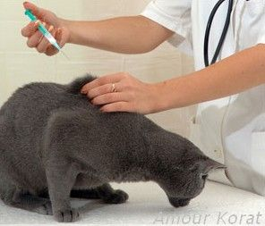
Pour voir une séance vaccinale de chatons d'Amour Korat : clic ici.
Pour voir une partie des contrôles des chatons d'Amour Korat : clic ici.
Parasites internes et externes
Vermifugés au mieux et également traités préventivement contre tout parasites internes et externes, les chatons Amour Korat sont pré-immunisés contre les puces, la gale des oreilles, la dirofilariose, traités contre les infections par les nématodes gastro-intestinaux.
En résumé, de la première échographie de la maman à tout ce qu'il est possible de faire sur un chat, ils auront été suivis par deux cliniques vétérinaires (la confiance n'empêche pas le contrôle…) pour avoir l'assurance d'être traités contre tout ce qui peut arriver à un chat en France et à l'étranger.

Puces
La chatterie Amour Korat est indemne de puces.
Désinfection régulière des locaux ainsi qu'aérosols et fumigènes puissants contre les insectes et acariens sont fréquemment utilisés en prévention.
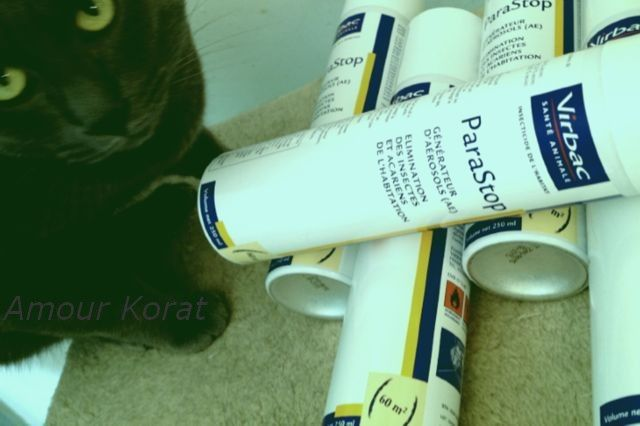
Une puce peut toujours s'introduire : survenue lors d'une visite chez le vétérinaire, apportée par quelqu'un visitant l'élevage…
Pour rappel, les poudres anti-puces ne fonctionnent plus depuis quelques années.
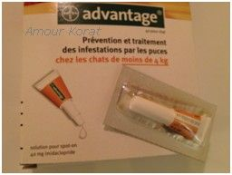
Amour Korat propose une pipette anti-puce adaptée pour chaque chaton.
Vermifuge
Le vermifuge est un médicament qui permet d'éradiquer les parasites intestinaux surabondants : vers, larves… De la naissance à six mois, il doit être administré mensuellement.
Le choix du vermifuge des chatons vivant dans la chatterie Amour Korat est réalisé selon la méthode suivante. Pour chaque chaton, ses selles sont prélevées, puis analysées (analyse coprologique), puis le vermifuge adapté lui est administré, enfin une seconde analyse est réalisée afin de constater le résultat. Enfin à cette période où tous les chats sont vermifugés en même temps, une désinfection appropriée des sols est réalisée : une solution d'eau de javel à 1% par exemple permet d'éliminer le revêtement collant qui entoure les œufs d'ascaris et d'ankylostomes mais n'entraîne pas leur mort… Il n'est pas nécessaire pour un particulier possédant un Korat de réaliser systématiquement un tel diagnostic mais il est impératif de vermifuger correctement son chaton.
L'expérience démontre que ceci est rarement réalisé correctement. Alterner les marques pour varier les molécules en pensant éradiquer un type de vers différent à chaque fois est une erreur d'automédication couramment pratiquée (quel humain essaierait d'alterner des médicaments pensant que sur le lot il y en aura bien un qui fonctionnera ?)
Obtenir un mauvais dosage chez un vétérinaire est malheureusement courant. Les vermifuges pour chiens et chats pourtant largement dénoncés sont encore fréquemment prescrits. Nombreuses sont encore les prescriptions pour chaton d'un demi cachet de vermifuge pour chat adulte faute d'avoir des vermifuges chatons sous la main. Or un cachet de milbemax par exemple, l'un des meilleurs vermifuges à spectre large, est dosé à 4mg de milbémycine pour chaton et 16mg pour chat… Ainsi, il est courant que des chatons soient mal vermifugés, trop ou trop peu, voir pas du tout par oubli.
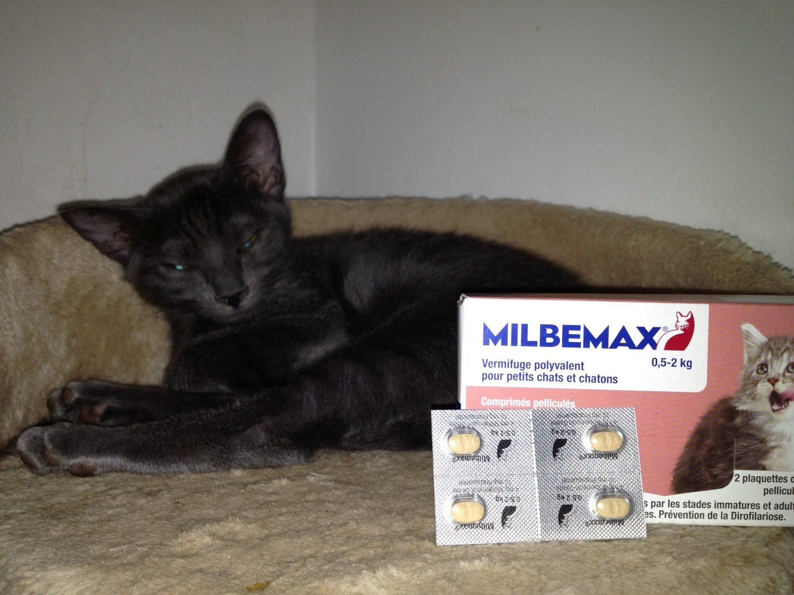
Jusqu'à 6 mois, un SMS de rappel est émis sur votre portable au bon moment pour vous rappeler de vermifuger votre Korat. Amour Korat propose de fournir des cachets de vermifuge à spectre large adaptés pour chaque chaton.
Anti stress
Zylkène est un anti stress sans accoutumance.
Il est éventuellement à administrer avant une source de stress : vous allez faire subir à votre chaton Korat un long voyage, il va faire la connaissance d'un autre animal…
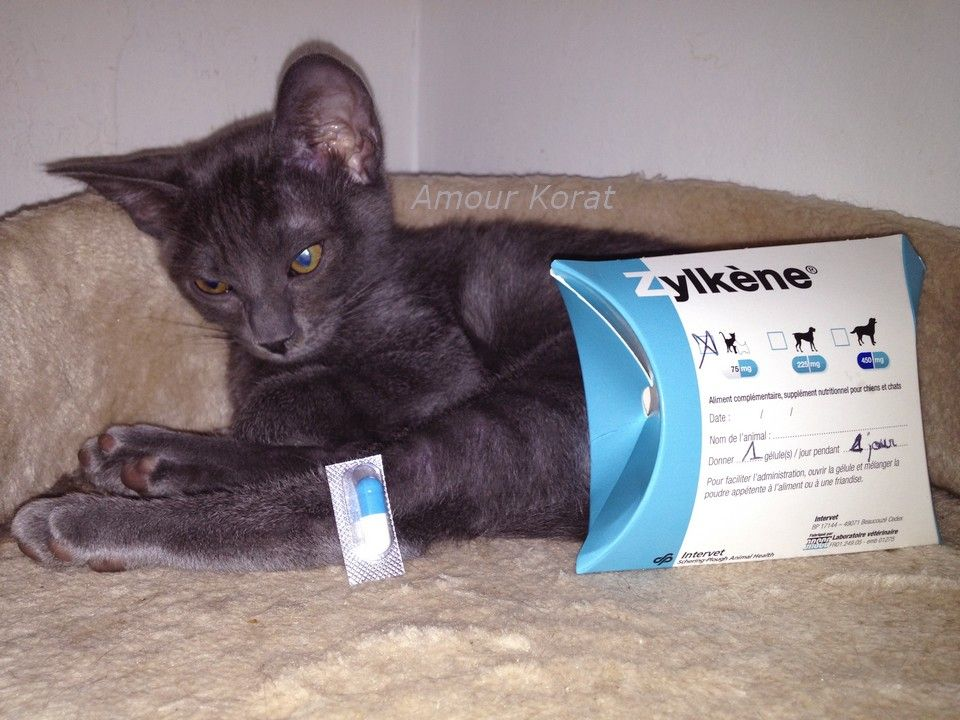
Un cachet de Zylkène est systématiquement fourni avec les chatons Amour Korat.
Yeux
La vue du chat est son sens primordial. Un angle de vision de 287° contre 180° chez l'homme, une couche de la rétine (tapetum lucidum) qui multiplie l'acuité visuelle dans la pénombre, trois paupières contre deux chez l'homme…
Lui nettoyer tout petit caca du coin des yeux est lui rendre service.
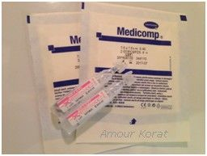
Deux sachets de lingettes et deux pipettes de sérum physiologique sont fournis avec chaque chaton Amour Korat.
Herbe a chat
L'herbe à chat n'est pas forcément nécessaire pour un chat devant régurgiter ses poils avalés, d'autant plus pour un chat de race Korat qui ne perd pratiquement aucun poil. Néamoins, si vous voulez donner de l'herbe à manger à votre chat qui apprécie, autant lui donner l'herbe idéale.
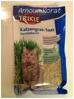
Un sac pour réaliser une plantation d'herbe à chat est systématiquement fourni avec les chatons Amour Korat.
Arômes
Un tissu désinfecté est placé en présence de la portée dès les premiers jours et ne la quittera plus.
Lors de la séparation, un traumatisme psychologique se passe : séparation familiale, changement de lieux pour les chatons…
Des parties de ce tissu sacré sont laissées pour papa et maman Korat.

Une partie de ce tissu sacré est toujours fournie avec chaque chaton Amour Korat, il le rassurera lors de cette transition.
Nourriture
Outre allaiter maman, les chatons mangent principalement des croquettes vétérinaires spéciales chatons.
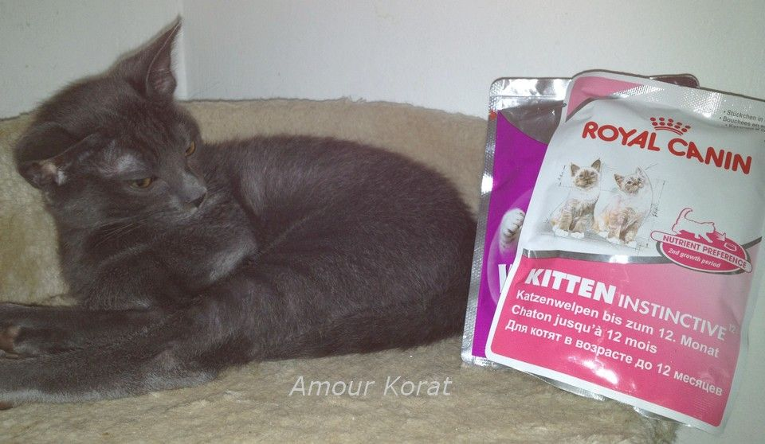
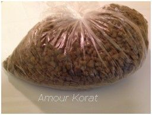
Différentes nourritures vous seront systématiquement fournies avec chaque chaton Amour Korat afin qu'il puisse trouver chez vous ce qu'il a l'habitude de consommer au moment de son départ.
Litière et propreté
Les chatons Amour Korat sont parfaitement propres. Ils vont dans la litière dès qu'ils savent marcher. Au début ils ne font rien mais y vont et grattent par mimétisme des parents avec qui ils vivent en permanence. Les parents ont toujours été parfaitement propres. Tout se passe toujours très proprement dans la litière ensuite lorsque les chatons sont adoptés.
Chaque chaton aura durant ses trois premiers mois connu les différentes litières du marché : végétale à base de sciure de bois, de copeaux de bois, de granules de bois, de rafle de mais, de paille, minérale à base de granulés d'argile naturelle, agglomérante à base de silice, de sable, et même celle en papier recyclé. Ainsi il saura s'adapter à toute litière.
Passeport
Inscrire les vaccins et autres sur un simple carnet de santé ne permet pas à un chat de passer la frontière par exemple : il lui faut un vrai passeport dûment enregistré.
Devoir consulter un vétérinaire en vue d'acquérir un passeport à son chat peut être une formalité fastidieuse.
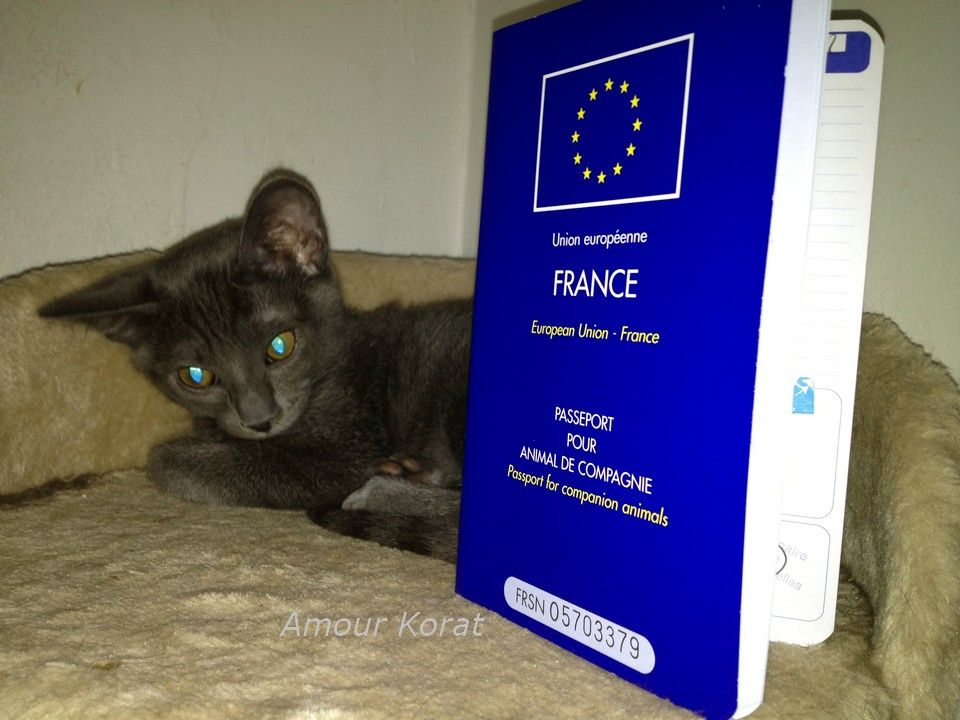
Amour Korat propose un passeport enregistré pour ses chatons.
Harnais, médaille
Il n'est pas facile de se procurer un harnais pratique de qualité, qui fonctionne bien de manière sûre et sans danger. En acquérir plusieurs avant d'en trouver un adapté à son chaton est fréquent.
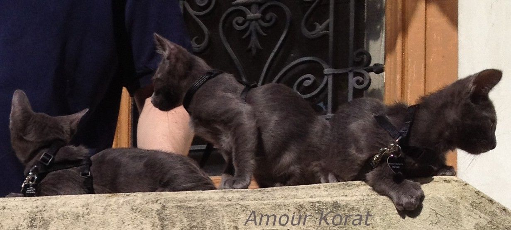
Amour Korat propose une médaille gravée recto et verso (nom du korat, tél du propriétaire…), une laisse, et un harnais pour chaque chaton adapté.
Stérilisation précoce
Attentif à respecter le choix des adoptants, ne prétendant pas détenir la vérité surtout dans une polémique où la communauté même des vétérinaires est divisée, le choix est laissé aux futurs propriétaires. C'est à dire que les chatons ne sont généralement pas stérilisés de manière précoce, mais si un futur propriétaire le demande, l'opération est réalisée.
Pour avoir quelques lumières sur la stérilisation précoce : notre ancien article.
Pedigree
Amour Korat fourni systématiquement un pedigree édité par le LOOF pour chaque chaton Korat.
Le « TCC » suivi de numéros sous chaque illustre ancêtre du chaton correspond à son numéro d'enregistrement officiel du Thaïland Cat Club.
L'exemple en photo (cliquez dessus pour l'agrandir) correspond au chat AMOUR KORAT'S ILYS né le 30 janvier 2013 (portée visible en cliquant ici), le papa se nomme BAANPHIMAI PARADORN (affixe : Baanphimai ; nom : Paradorn ; nom d'usage : Van Gogh) et la maman KORATHAI BAI-PAI (affixe Korathai ; nom : Bai-pai ; nom d'usage : Vitamine).
Van Gogh et Vitamine, les deux chats d'Amour Korat de l'exemple pris, sont nés en Thaïlande, ils ont été soigneusement sélectionnés (gardés et testés durant plusieurs jours) et importés à 4 mois en bagage à main par avion sans jamais plus quitter leur propriétaire de l'élevage Amour Korat.
Le nom d'un chat, usuellement établi au hasard par l'éleveur, ne peut ensuite se modifier sur les papiers officiels. Le nom d'usage, usuellement établi par le propriétaire, peut se changer à loisir sur les papiers officiels. Concernant la chatterie AMOUR KORAT, il est donné en nom (le définitif qui ne change plus) celui choisi par les futurs adoptants propriétaires.
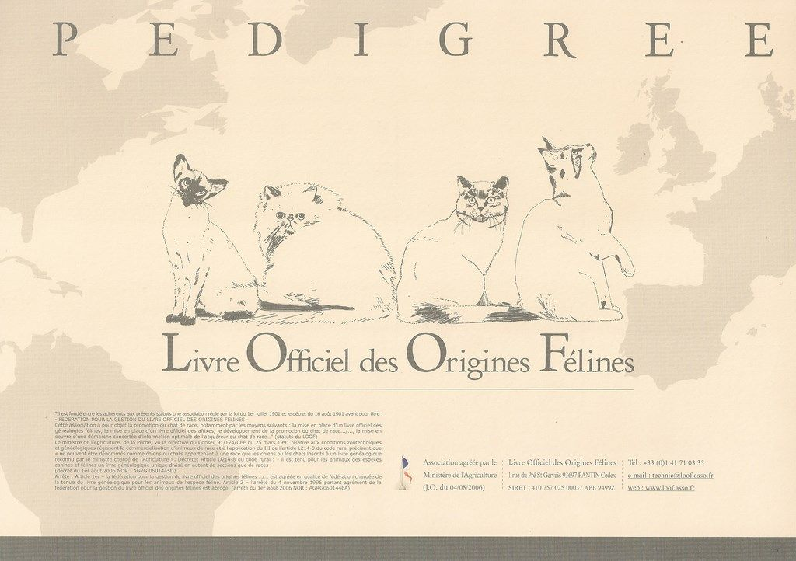
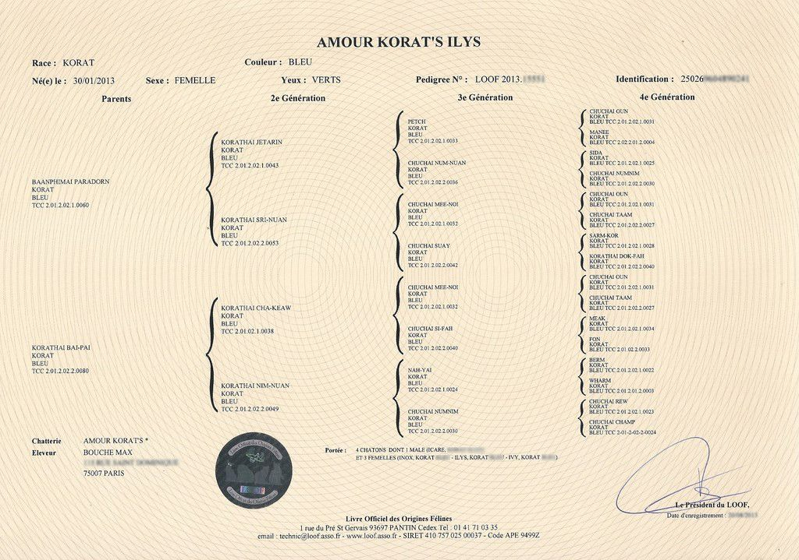
Amour Korat fourni systématiquement un pedigree LOOF pour chaque chaton. Les propriétaires choisissent le nom définitif de leur chat. Les chatons issus d'Amour Korat sont d'une qualité certaine issus de parents de première qualité soigneusement sélectionnés.
Garde
Si vous avez besoin de faire garder votre Korat, Amour Korat se propose.
Car c'est un réel plaisir de choyer à nouveau d'anciens chatons adoptés.
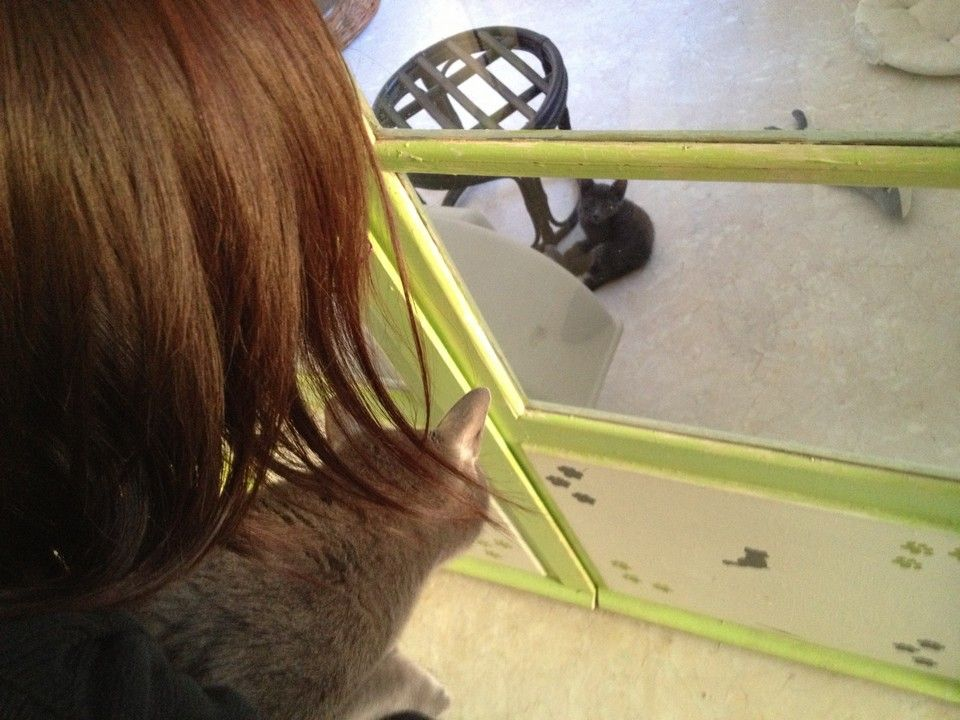
14 nov. 2012 Amour Korat's Eclipse et sa propriétaire : chatte Korat pure race née le 27 mars 2009 en garde durant les vacances de la Toussaint.
10 mars 2013 Amour Korat's Shifumi et Amour Korat's Hanaé de Belleville : chats Korat pure race nés le 12 août 2012, frère et sœur qui se retrouvent par hasard en même temps en garde durant les vacances d'hiver de leurs maîtres.
Seuls les chats issus d'Amour Korat à jour de leurs vaccins sont acceptés en garde pour dépanner. Ceci à cause d'éventuelles maladies héréditaires contagieuses difficilement décelables qui mettent des années avant d'abonner les propriétaires aux urgences… Et dont certains élevages ne semblent pas indemnes !
Cette liste n'est pas exhaustive, bien entendu en adoptant un chaton vous repartez avec de la litière qu'il aime, de quoi le faire jouer, etc.
Le suivi des Korats est assuré tout au long de leur vie avec plaisir.